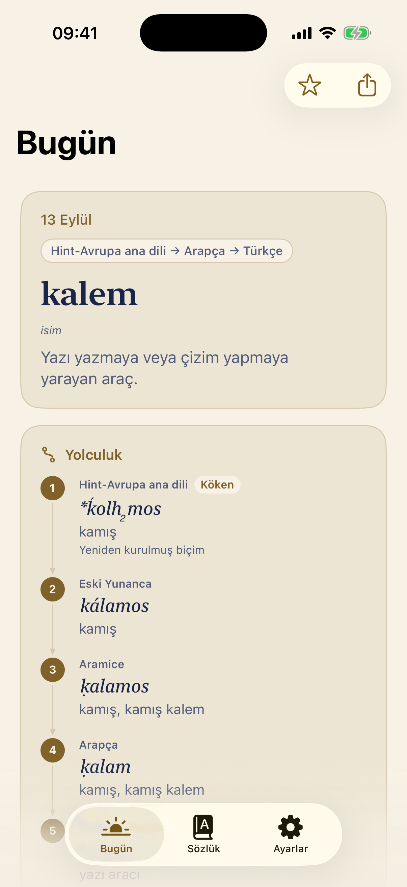
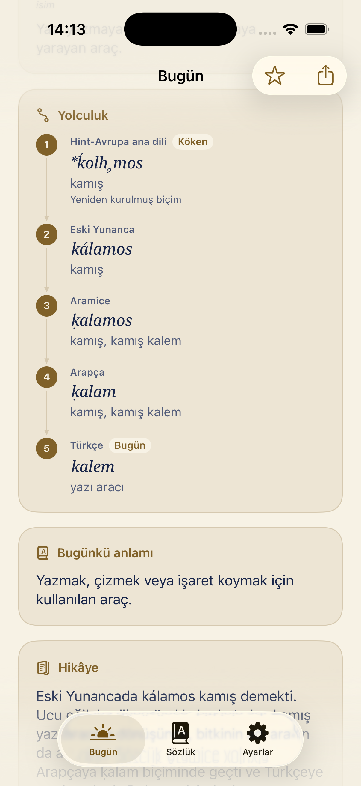
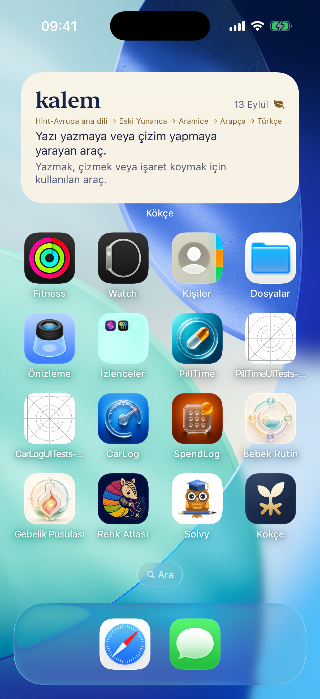
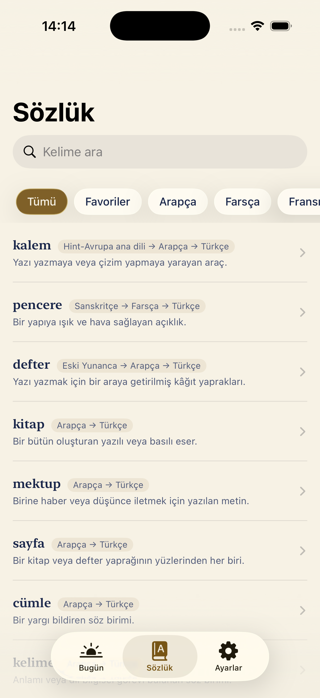
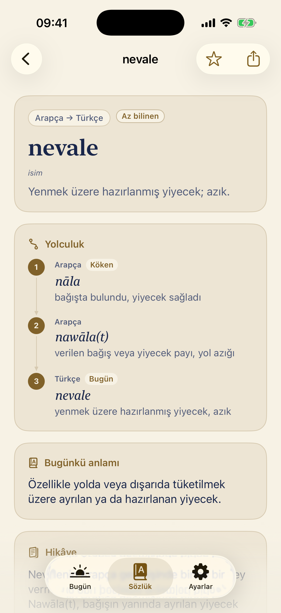

01 — Bugün
Bugün
Kökeni, yolculuğu, bugünkü anlamı.

02 — Yolculuk
Yolculuk
Kelimenin geçtiği her dili görün.

03 — Widget
Widget
Uygulamayı açmanıza gerek yok.

04 — Sözlük
Sözlük
Her maddede kullanılan kaynaklar açık.

05 — Az bilinen
Az bilinen
Az bilinen kelimeler kipini açın.
